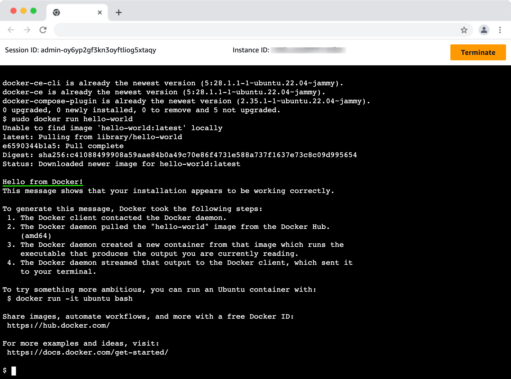
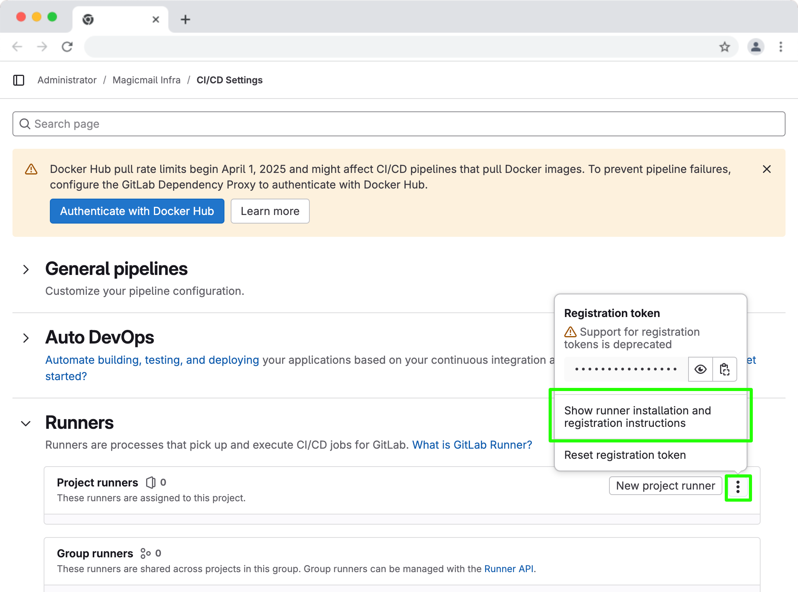
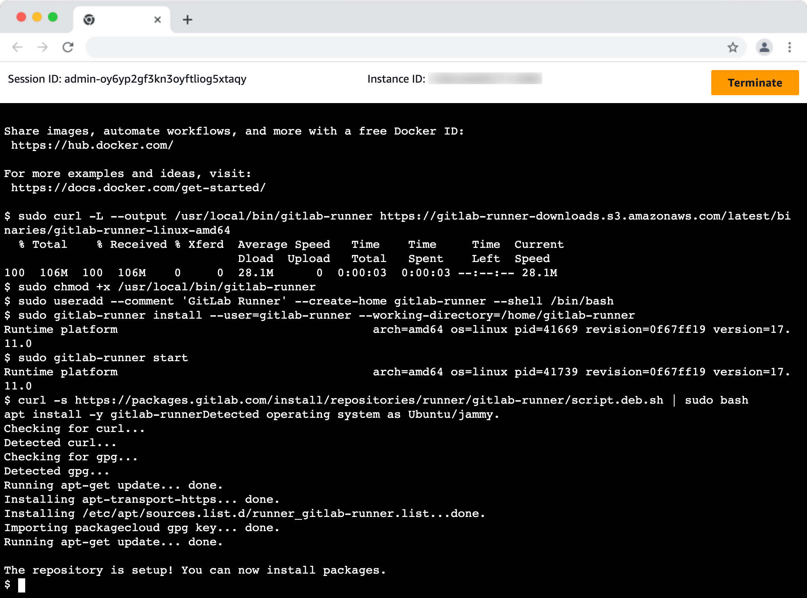
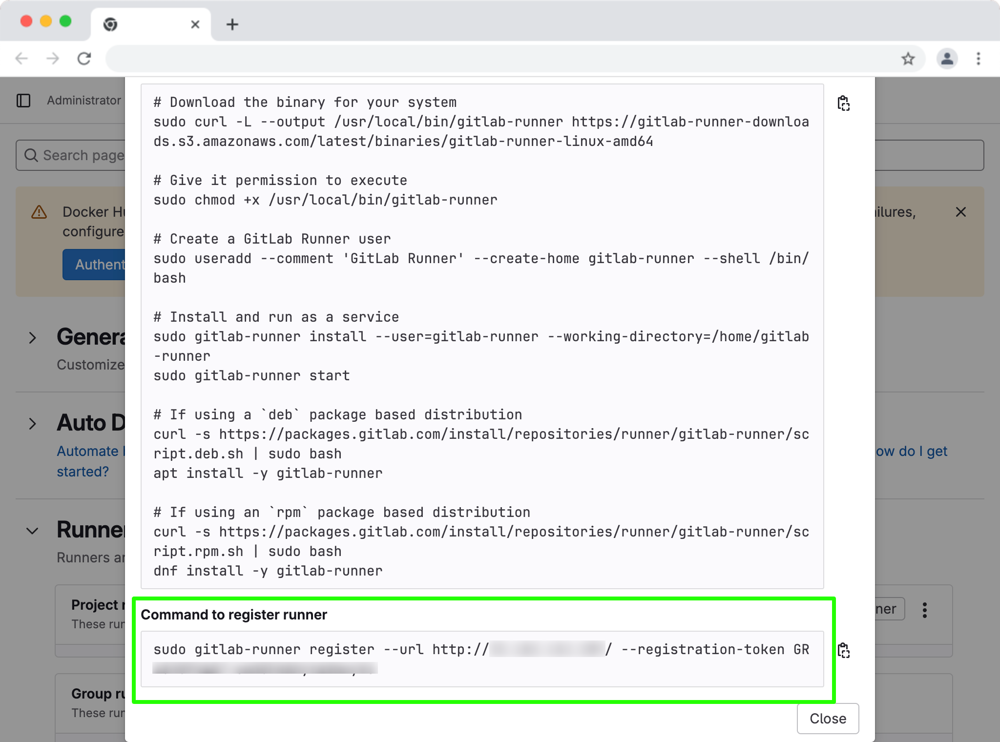
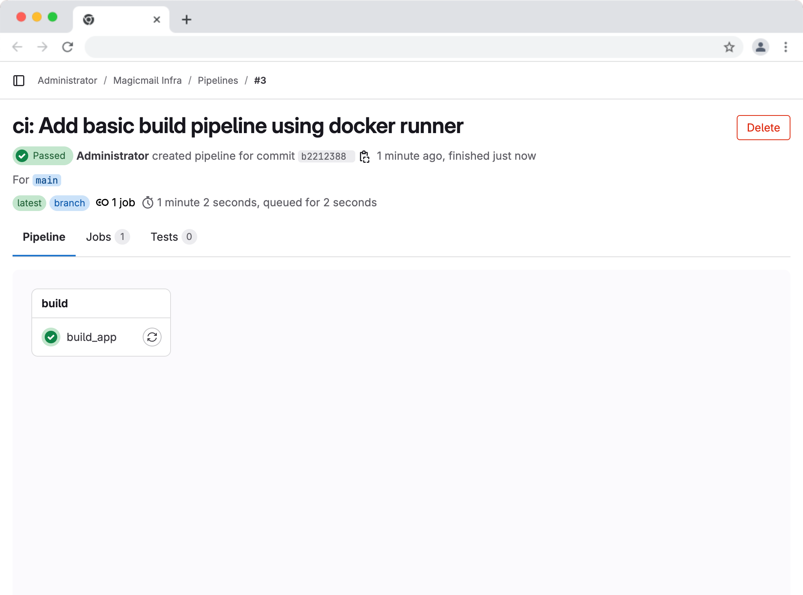
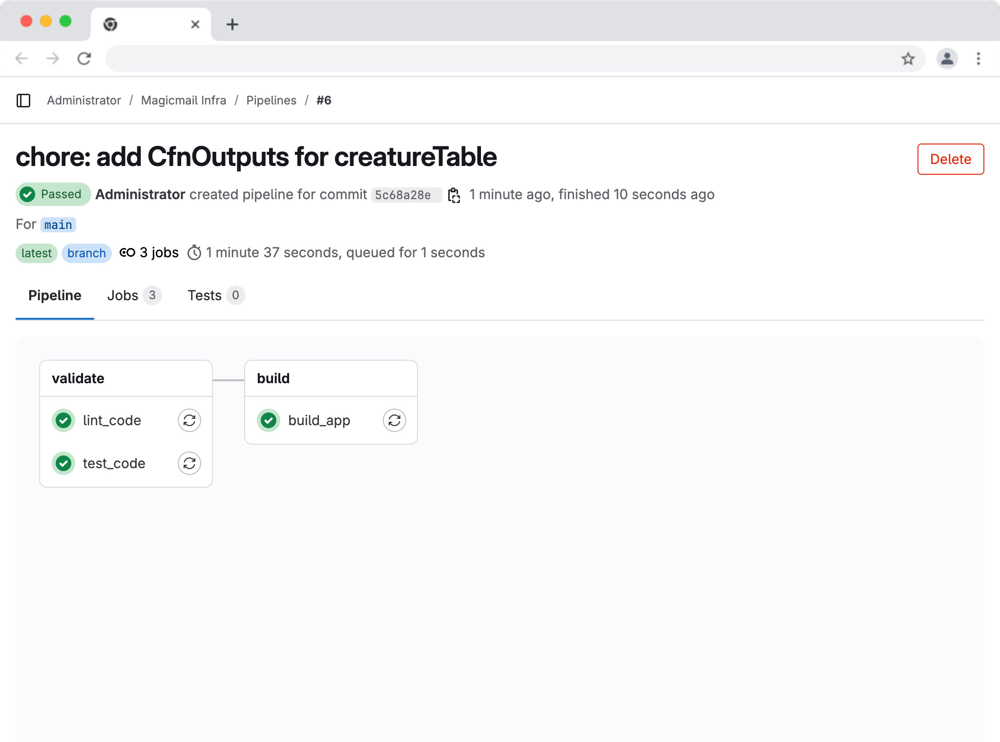
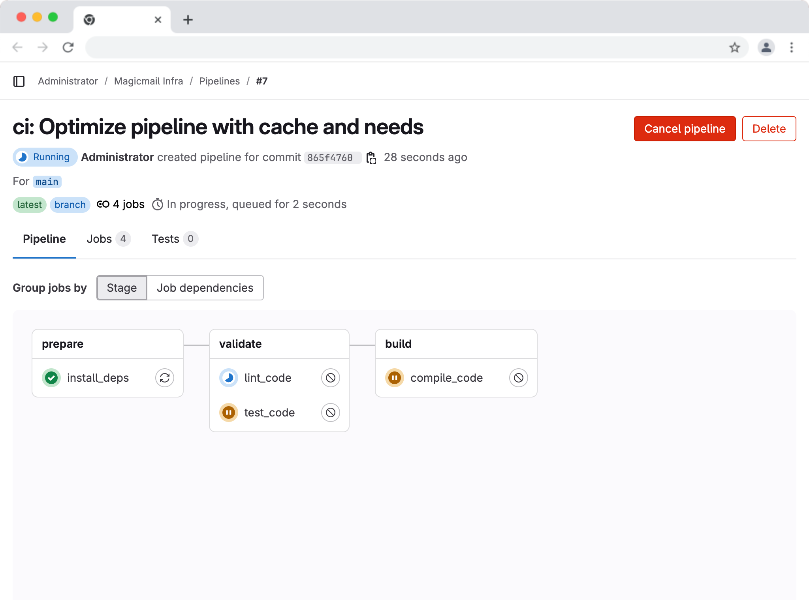
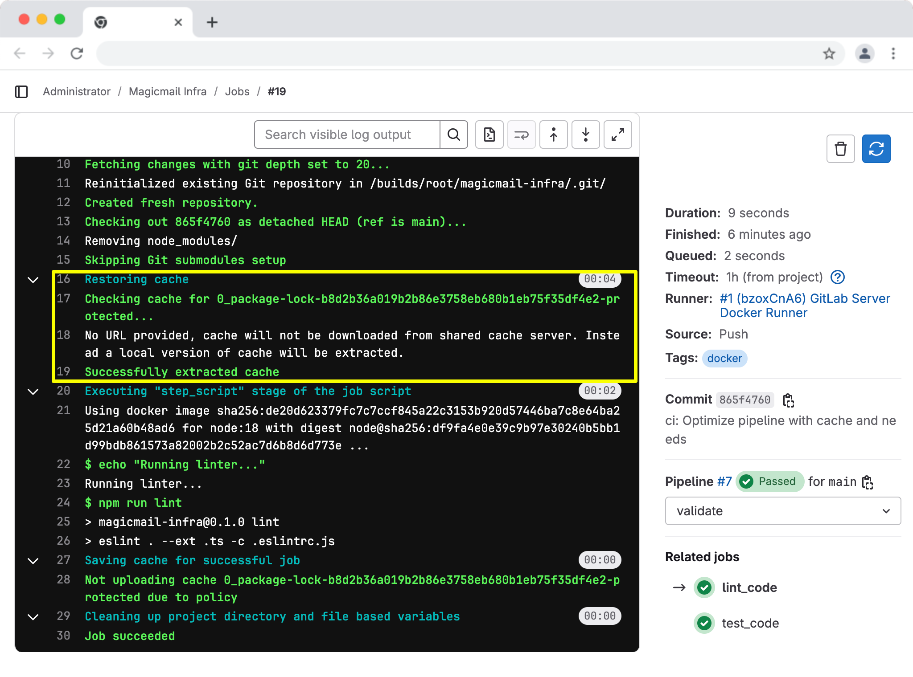

Ethan felt a sense of accomplishment. He had successfully set up Git for version control, deployed a GitLab server using CDK itself, and learned the collaborative workflow involving issues and merge requests. The main branch of his magicmail-infra project on GitLab now reflected the reviewed and merged code.
"Okay, Maya," Ethan began their next session, "I understand the concepts of CI/CD from last time – automating the build, test, and deployment process. And I see how GitLab provides the framework with pipelines, stages, jobs, and that .gitlab-ci.yml file. How do we actually make it do something?"
Maya smiled. "Exactly the right question! The magic doesn't happen on its own. We need two key ingredients: first, an agent – a GitLab Runner – that can actually execute the commands we define, and second, the instruction manual – the .gitlab-ci.yml file – telling the Runner what to do."
"So, the Runner is like a worker bee, and the YAML file is its task list?" Ethan asked.
"Precisely!" Maya confirmed. "In this chapter, we'll tackle both. We'll set up a Runner configured to use the Docker executor. This runs each job inside a clean Docker container, ensuring a consistent environment defined by a Docker image specified in our .gitlab-ci.yml file. Then, we'll create our first .gitlab-ci.yml file to define a basic pipeline that automates the initial validation steps for our CDK code: installing dependencies, compiling, linting, and testing."
"Before GitLab can run any automated jobs for us, it needs access to an environment where those jobs can execute," Maya explained. "This environment is provided by a GitLab Runner."
"A GitLab Runner is essentially a process or service that polls your GitLab instance (or GitLab.com) for available CI/CD jobs. When it finds a job it's configured to handle, it prepares the execution environment (in our case, starting a Docker container), clones the relevant repository code, executes the script defined in the job's section of .gitlab-ci.yml inside that environment, and reports the results back to GitLab."
Diagram: GitLab Runner (Docker Executor) Interaction.
GitLab makes a job available.
The gitlab-runner process picks up the job.
The runner instructs the Docker daemon on the host to pull the required image (e.g., node:18) and start a container.
The runner executes the job's script inside the container (cloning the repo, running commands).
The runner sends logs and status back to the GitLab instance.*
"There are different ways Runners can be set up:"
Shared Runners: On GitLab.com, these are runners managed by GitLab itself, available for multiple projects (often with usage limits on free tiers). They provide a quick way to get started without managing runner infrastructure.
Group Runners: Runners available to all projects within a specific GitLab group.
Specific Runners: Runners registered and dedicated to a single GitLab project. This offers the most control over the runner's environment and configuration for a particular project.
Diagram: GitLab Runner Types
"Furthermore, Runners can be installed on various operating systems (Linux, macOS, Windows) and can use different executors to run jobs, such as:"
Shell Executor: Runs jobs directly on the host. Simple but requires careful host environment management and offers less isolation.
Docker Executor: (What we'll use) Runs each job in a clean Docker container based on an image specified in `.gitlab-ci.yml. This is highly recommended as it provides isolation, ensures a consistent environment defined by the image (e.g., Node.js version), and avoids polluting the host machine with job-specific dependencies.
Kubernetes Executor: Runs jobs as pods in a Kubernetes cluster. Powerful for scaling.
(Others exist)
"For our self-hosted GitLab server," Maya explained, "we need to provide our own runner, and it'll be a Specific Runner type for our MagicMail project. We'll install the GitLab Runner software on the same EC2 instance that hosts our GitLab application, but we'll configure this runner to use the Docker Executor. This means each CI/CD job will run inside a temporary Docker container, ensuring a clean and consistent environment based on the Docker image we specify later in our .gitlab-ci.yml file. To enable this, we also need to install the Docker Engine on the EC2 instance itself, allowing the runner to manage these containers."
"Let's connect to our GitLab EC2 instance using SSM Session Manager and get Docker and the runner set up."
Connect via SSM: Use the SsmCommand output from the GitLabServerStack deployment (from Chapter 2). Remember to use the correct AWS profile if needed.
# Example: aws ssm start-session --target i-0abcdef1234567890 --profile magicmail-devaws ssm start-session --target <YOUR_INSTANCE_ID> [--profile your-profile-name](Alternatively, if you had separately configured SSH access with a key pair, you could use ssh ubuntu@<YOUR_INSTANCE_PUBLIC_IP> -i /path/to/your/key.pem, but SSM is the method we set up).
Install Docker Engine: We need to install Docker on the Ubuntu instance. Follow the official Docker installation steps for Ubuntu:
# Update package index and install prerequisitessudo apt-get updatesudo apt-get install -y ca-certificates curl gnupg
# Add Docker's official GPG keysudo install -m 0755 -d /etc/apt/keyringscurl -fsSL https://download.docker.com/linux/ubuntu/gpg | sudo gpg --dearmor -o /etc/apt/keyrings/docker.gpgsudo chmod a+r /etc/apt/keyrings/docker.gpg
# Set up the Docker repositoryecho \ "deb [arch=$(dpkg --print-architecture) signed-by=/etc/apt/keyrings/docker.gpg] https://download.docker.com/linux/ubuntu \ $(. /etc/os-release && echo $VERSION_CODENAME) stable" | \ sudo tee /etc/apt/sources.list.d/docker.list > /dev/null
# Install Docker Enginesudo apt-get updatesudo apt-get install -y docker-ce docker-ce-cli containerd.io docker-buildx-plugin docker-compose-plugin
# Verify Docker installation (optional)sudo apt-get install -y docker-ce docker-ce-cli containerd.io docker-buildx-plugin docker-compose-plugin
# Run hello-world to confirm docker installationsudo docker run hello-world Caption: Installing Docker Engine on the Ubuntu server.
Install GitLab Runner: Now install the runner package itself. Go to the Magicmail Infra Project CICD Settings --> Runners. Follow the instructions from "Show runner installation and registration instructions". Our server is a deb package based distribution.
 Caption: Project Runner Installation Instructions
# Download the binary for your system sudo curl -L --output /usr/local/bin/gitlab-runner https://gitlab-runner-downloads.s3.amazonaws.com/latest/binaries/gitlab-runner-linux-amd64 # Give it permission to execute sudo chmod +x /usr/local/bin/gitlab-runner # Create a GitLab Runner user sudo useradd --comment 'GitLab Runner' --create-home gitlab-runner --shell /bin/bash # Install and run as a service sudo gitlab-runner install --user=gitlab-runner --working-directory=/home/gitlab-runner sudo gitlab-runner start # If using a `deb` package based distribution curl -s https://packages.gitlab.com/install/repositories/runner/gitlab-runner/script.deb.sh | sudo bash apt install -y gitlab-runner # If using an `rpm` package based distribution curl -s https://packages.gitlab.com/install/repositories/runner/gitlab-runner/script.rpm.sh | sudo bash dnf install -y gitlab-runner Caption: Installing the GitLab Runner package on the Ubuntu server.
Register the Runner (Docker Executor with Tag): Now, register the runner, specify docker as the executor, and crucially, add a tag so we can specifically target this runner. Follow the instructions from "Command to register runner".
Get Token from GitLab: Go to your project's Settings -> CI/CD -> Runners and copy the Registration Token.
 Caption: Finding the project-specific runner registration token in GitLab. (Note on Tokens: GitLab is transitioning towards Authentication Tokens, but Registration Tokens still work for this manual setup.)
Run Registration Command (Copy from GitLab instructions):
sudo gitlab-runner register --url http://12.34.56.78/ --registration-token GR1348941A7-sxAGFwXXyfz9mxyV6Answer Prompts:
Enter the GitLab instance URL...:Enter your server URL (e.g., http://<YOUR_INSTANCE_PUBLIC_IP>).
Enter the registration token: Paste the token.
Enter a description for the runner: e.g., GitLab Server Docker Runner.
Enter tags for the runner (comma-separated): Type docker and press Enter.
Enter optional maintenance note...: Leave blank (press Enter).
Enter an executor: Type docker and press Enter.
Enter the default Docker image...: Enter node:18 (or your preferred version) and press Enter.
Confirmation: Runner registered successfully.
Verify Runner:
Check the Settings -> CI/CD -> Runners page in GitLab. Your new runner should appear, and it should list the docker tag.
Check status in the terminal:
sudo gitlab-runner statusIt should show gitlab-runner: Service is running.
"Excellent!" Maya said. "Now we have a Runner configured to use Docker, and it has the tag docker. We can use this tag in our .gitlab-ci.yml to ensure jobs run using this specific runner and executor."
"Now for the instruction manual," Maya said. "We need to create a file named .gitlab-ci.yml (note the leading dot) in the root directory of our local magicmail-infra project."
"This file uses YAML syntax, which relies heavily on indentation (spaces, not tabs!) to define structure. It tells GitLab CI/CD what stages and jobs to run."
"Let's start with the absolute simplest pipeline: one stage (build) with one job (build_app) that just installs dependencies and compiles the TypeScript code. Create the .gitlab-ci.yml file in the root of your project and add the following content:"
# .gitlab-ci.yml - Simple Version 1 (Build Only)
stagesbuild
default imagenode18 tagsdocker # Ensure jobs use our tagged Docker runner
build_app stagebuild scriptecho "Starting the build process inside $NODE_VERSION..."node -vnpm -vecho "Installing dependencies..."npm ciecho "Compiling TypeScript..."npm run buildecho "Build finished!""Let's break this down:"
stages:: We define just one stage named build.
default:: Applies settings to all jobs.
image: node:18: Tells the Docker executor to use this image.
tags: - docker: Ensures jobs run on our runner tagged with docker.
build_app:: Our job name.
stage: build: Assigns the job to the build stage.
script:: The commands executed inside the node:18 container: checking versions, installing dependencies (npm ci), and compiling (npm run build).
"Now, let's commit this initial .gitlab-ci.yml file:"
xxxxxxxxxx"Pushing this commit will trigger the pipeline."
Go to GitLab: Navigate to CI/CD -> Pipelines.
Observe: You should see the new pipeline running with the build_app job.
Check Logs: Click into the build_app job. Verify it uses the Docker runner and executes the npm ci and npm run build commands successfully inside the container.
 Caption: Simple build pipeline job completed successfully.
"Great! The basic build automation works."
Prerequisite: Setup ESLint Configuration
"Okay, the basic build works. Now, before we add validation jobs like linting to our pipeline, we need to make sure our project is set up correctly for ESLint," Maya explained.
Understanding Linting: "First, what is linting?" Maya asked rhetorically. "Linting is the process of using an automated tool (a 'linter') to analyze your source code for potential errors, stylistic inconsistencies, and deviations from best practices or predefined coding standards. For TypeScript, a very popular linter is ESLint." "Why is linting important, especially in CI/CD?"
Consistency: It helps ensure everyone on the team writes code that follows the same style guide (e.g., indentation, variable naming, use of semicolons), making the codebase easier to read and maintain.
Early Error Detection: Linters can often catch simple syntax errors or potential logical issues (like unused variables) before you even run the code or tests.
Best Practices: They can enforce adherence to language best practices, helping prevent common pitfalls.
Automation: Running the linter automatically in our CI pipeline ensures that code merged into main meets the project's quality standards without requiring manual checks for every single style issue during code reviews.
Create ESLint Config File (.eslintrc.js):
"It seems cdk init might not have created an ESLint configuration file for us. ESLint needs this file to know how to check our code. Let's create a basic one compatible with ESLint v8 (which we'll install next). In the root of your local magicmail-infra project, create a file named .eslintrc.js and add the following content:"
xxxxxxxxxx"Save this file. This tells ESLint how to handle our TypeScript code and applies a standard set of recommended rules."
Update .gitignore:
"Crucially, our default .gitignore file likely contains *.js, which would prevent Git from tracking our new .eslintrc.js file! We need to add an exception for it."
"Open your local .gitignore file and add the following line:"
xxxxxxxxxx"Save the .gitignore file."
Install Linter Dependencies (ESLint v8):
"Now, let's install ESLint v8 and its TypeScript plugins as development dependencies. We specify v8 because it uses the .eslintrc.js format we just created."
xxxxxxxxxxThis installs the necessary packages and updates package.json and package-lock.json.
Add/Update Lint Script in package.json:
"Finally, let's add or update the lint script in package.json to run ESLint, explicitly telling it which config file to use with the -c flag. This can help avoid potential issues where ESLint might search in unexpected directories within the CI environment."
"Open your local package.json file and ensure the lint script in the scripts section looks like this:"
xxxxxxxxxxeslint . --ext .ts: Lints TS files in the current directory.
-c .eslintrc.js: Explicitly tells ESLint to use the .eslintrc.js file in the current directory.
"Save the package.json file."
Commit Prerequisite Changes: "Before we modify the pipeline, let's commit these setup changes:"
xxxxxxxxxx"Now our project is ready for linting."
Adding Validation Stage to Pipeline
"Let's make the pipeline more useful by adding a validate stage to run our new lint script and the existing tests," Maya suggested.
"Update your .gitlab-ci.yml file:"
xxxxxxxxxx"Here's what changed:"
stages:: Added validate before build.
lint_code Job: Added to validate stage, runs npm ci and npm run lint.
test_code Job: Added to validate stage, runs npm ci and npm run test.
Jest Context: The echo statements clarify that this job runs the default Jest test created by cdk init, which primarily checks if the CDK stack can be synthesized into a CloudFormation template without errors.
build_app Job: Remains unchanged in the build stage for now
"This pipeline doesn't compile or synthesize yet, but it provides a crucial first step: automatically checking code quality and running unit tests whenever code is pushed."
Committing and Running the Multi-Stage Pipeline
"Now, let's commit the updated .gitlab-ci.yml file:"
xxxxxxxxxx"Check CI/CD -> Pipelines in GitLab again. You'll see a new pipeline with the validate and build stages. The two jobs in validate should run first (potentially in parallel). If they both pass, the build_app job in the buildstage will run."
 Caption: Pipeline view showing multiple stages and jobs.
"If the lint_code job fails," Maya added as a note, "it means ESLint found issues in your code. Click the job, examine the log to see the specific errors, fix them locally in your editor, run npm run lint locally to verify, then commit and push the fixes. The pipeline will run again, hopefully passing this time. A failing lint job is the pipeline doing its job!"
Ethan said "Yes. My job failed with lint error like this. I had forgotten to add the output for DynamoDB Table Name. Lint is doing its job!!"
xxxxxxxxxx"If all jobs pass, the pipeline succeeds! We now have automated linting and testing running before our build."
"Our current pipeline works, but it's inefficient," Maya pointed out. "Notice that the lint_code, test_code, and build_app jobs all run npm ci independently. This means we're downloading and installing all our Node.js dependencies three times, which is slow."
"We can fix this using cache and needs."
cache: Saves directories (like node_modules) after a job runs. Subsequent jobs can reuse this cache.
needs: Creates explicit dependencies between jobs, allowing jobs in later stages to start as soon as their specific dependencies are met, rather than waiting for the entire previous stage. It also allows jobs to download artifacts or caches from the jobs they need.
"Let's refactor our .gitlab-ci.yml."
.gitlab-ci.yml with Cache and Needs"Update your .gitlab-ci.yml file with the following:"
xxxxxxxxxx"Let's look at the key changes:"
New prepare Stage: Added before validate and build.
install_deps Job: Runs npm ci once in the prepare stage and creates/pushes the node_modules cache.
lint_code, test_code, compile_code Jobs:
No longer run npm ci.
Added needs: [install_deps] to declare dependency on the install_deps job.
Added cache: with policy: pull to download and use the cache created by install_deps.
compile_code Job: Renamed from build_app and placed in the build stage. It now only runs npm run build. (Note: We could make this depend on the validate jobs by adding needs: [lint_code, test_code] if we wanted stricter sequencing).
"With this structure," Maya explained, "npm ci runs only once. The lint_code, test_code, and compile_code jobs download the cache and run their specific tasks much faster."
"Save the updated .gitlab-ci.yml."
"Commit and push this optimized version:"
xxxxxxxxxx"Check CI/CD -> Pipelines again. Observe the new pipeline run. You should see the prepare stage run first, followed by the validate and build stages (whose jobs might run somewhat in parallel as they both depend only on prepare). Check the logs for the jobs in validate and build – you should see messages indicating the cache is being downloaded (Restoring cache...)."
 Caption: Optimized pipeline showing separate prepare, validate and build stages.
 Caption: Job log indicating the node_modules cache was successfully downloaded.
"This optimized structure forms a solid foundation for our CI pipeline."
"Before we wrap up, let's tag the current state of our main branch to mark the completion of Chapter 5," said Maya. "This helps us to check out the code as it should be at this point."
Ensure main is Up-to-Date: Make sure you are on the main branch locally and have pulled the latest changes:
xxxxxxxxxxCreate Local Tag: Create the tag pointing to the latest commit on main:
xxxxxxxxxxPush Tag: Push this new tag to the remote GitLab server
xxxxxxxxxx"Today was a major hands-on breakthrough, Ethan," Maya said. "You now have a working CI pipeline that automatically installs dependencies, lints your code, runs tests, and builds your project — every time you push changes."
"You even optimized it for speed and efficiency using caching and dependencies — just like professional CI/CD setups."
Maya smiled. "This is the kind of foundation that scales. In the next chapter, we'll expand your pipeline to interact with AWS — automatically synthesizing, previewing, and eventually deploying your infrastructure changes."
Explore Caching: Read the GitLab CI/CD documentation specifically about the
cachekeyword. Understand the difference betweenpull-pushandpullpolicies.Explore
needs: Read the documentation about theneedskeyword and how it allows creating a Directed Acyclic Graph (DAG) of job dependencies, potentially overriding stage order.Strict Sequencing: Modify the
compile_codejob'sneedskeyword to make it depend on bothlint_codeandtest_code, ensuring compilation only happens after validation fully succeeds. Push the change and observe the pipeline graph.
GitLab Runners execute CI/CD jobs. The Docker executor is recommended for providing isolated and consistent job environments using Docker images.
Docker Engine must be installed on the host machine when using the Docker executor.
Runners are registered to a GitLab instance/project using a Registration Token (or newer Authentication Tokens). Tags are used to control which runners execute which jobs.
The
.gitlab-ci.ymlfile defines the pipeline structure.
stages:defines the sequential execution order of job groups.
image:(used by Docker executor) specifies the Docker image for the job environment.
tags:directs jobs to runners with matching tags.
script:contains the shell commands executed by the runner.Linting (
eslint) and Testing (jest) are crucial validation steps to include early in the pipeline.Project dependencies (
eslint,@typescript-eslint/*, etc.) must be listed inpackage.jsonsonpm ciinstalls them.Configuration files (
.eslintrc.js) must exist in the repository (and not be ignored by.gitignore) for tools like ESLint to function.
cache:speeds up pipelines by reusing downloaded dependencies (node_modules) or build outputs between jobs/pipelines based on akey(oftenpackage-lock.json).
needs:creates explicit dependencies between jobs, allowing for more complex execution flows than simple stage sequencing and enabling earlier stages to use >- >- >-artifacts:saves files/directories from a job for later use or download.
We've successfully built a CI pipeline that automatically validates our CDK code using linting and testing, optimized with caching. The next logical step is to integrate our pipeline with AWS to perform actions like cdk synth, cdk diff, and eventually cdk deploy. Chapter 6 will focus on securely configuring AWS credentials within the GitLab CI/CD environment and adding jobs to synthesize our templates and preview changes using cdk diff, bringing us closer to fully automated infrastructure management.
GitLab Runner: Installation, Registration (Docker Executor, Tags).
.gitlab-ci.yml: Definingstages,default,image,tags,script,cache(key, paths, policy),needs,artifacts(paths, expire_in).Pipelines: Viewing pipeline structure, stages, jobs, and logs.
CI/CD Variables: (Mentioned as the solution for AWS Credentials in the next chapter).
Docker Executor: How it uses images for isolated job execution.
Docker Engine: Installation on the runner host.
Linting (ESLint): Purpose, adding dependencies (
eslint,@typescript-eslint/*), configuration (.eslintrc.js), adding run script topackage.json.npm ci: Purpose for clean installs in CI.